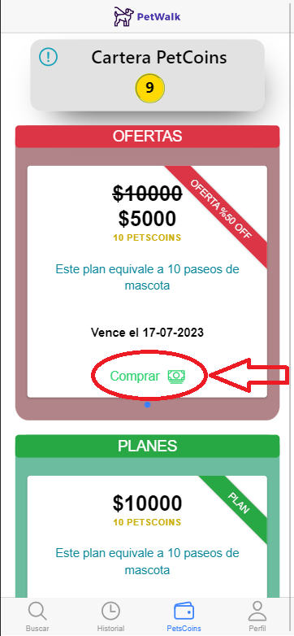
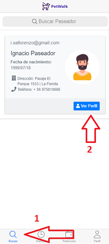
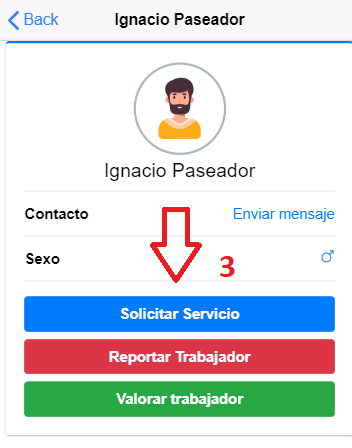
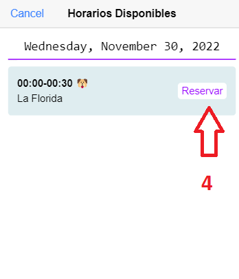
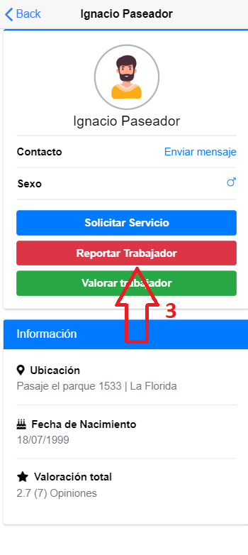
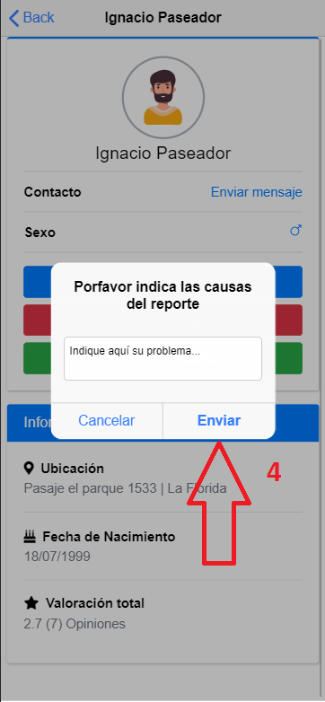

<ion-content fullscreen class="ion-padding" scroll-y="false">
  <ion-slides pager="true">
    <ion-slide>
      <div class="slide">
        
        <h2>Bienvenidos a PetWalk 🐾</h2>
       <h3> <strong>Paseos</strong></h3>
        <p>
          En este tutorial te enseñaremos a utilizar nuestra aplicación, para que puedas encontrar un paseador para tu mascota
        </p>
      </div>
    </ion-slide>

    <ion-slide>
      <h2>Qué necesito para contrarar un paseador?</h2>
      <p>
        Primero necesitas comprar de nuestra moneda llamada <b>PetCoins</b> Para ello navega hasta la sección de
        <b>PetCoins</b> en el menú de abajo y compra el plan que más te acomode, también tenemos <b>Ofertas</b> por tiempo limitado!, luego le das al botón de <b>Comprar</b> dentro del plan y termina el proceso de compra por WebPay
      </p>
      <h5>Listo!, ya tienes PetCoins</h5>
      
    </ion-slide>

    <ion-slide>
      <h2>Cómo puedo contratar un paseo?</h2>
      <p>
        Cuando ya tengas una cantidad de PetCoins puedes contratar paseos, para poder hacerlo debes dirigirte a la sección de <b>Buscar</b> 
        y aparecerá el listado de trabajadores aptos para prestar servicios, usted debe pulsar el botón <b>Ver perfil</b> y se desplegará la Información
        del trabajador, dentro de su perfil usted debe apretar el botón <b>Solicitar Servicio</b> y se desplegarán todas las horas disponibles que el
        trabajador tiene para la ejecución de su labor, finalmente usted solo debe pulsar el botón <b>Reservar.</b>
      </p>
       
    </ion-slide>

    <ion-slide>
      
           
      
    </ion-slide>

    <ion-slide>
      <h2>Qué hacer en caso de que algo malo ocurra?</h2>
      <p>
        Si algo malo llegara a pasar en un servicio, como por ejemplo, si el trabajador <b>no llegó, hirió, golpeó </b> o en el peor de los casos,
        si <b>atentó</b> contra la vida de su mascota usted debe realizar un reporte  dirigiendose a la sección de <b>Buscar</b> ver el <b>Perfil</b> 
        del trabajador involucrado en el asunto, y pulsar la opción de <b>Reportar trabajador</b> señalando las causas. Dicho reporte irá hacia el panel
        administrativo y el administrador inutilizará la cuenta del trabajador y tomará medidas legales contra la situación en caso de que estas sean aplicables.
      </p>
       
    </ion-slide>
    <ion-slide>
       
       
    </ion-slide>

    <ion-slide>
       
      <h2>Listo para empezar?</h2>
      <ion-button fill="clear" (click)="retornarPerfil()">Continuar <ion-icon slot="end" name="arrow-forward"></ion-icon></ion-button>
    </ion-slide>
  </ion-slides>
</ion-content>
